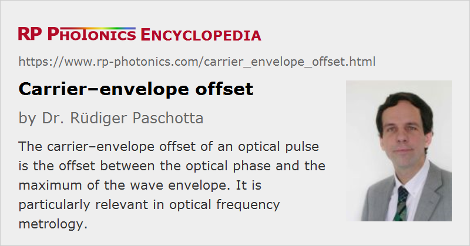

Carrier–envelope Offset
Acronym: CEO
Definition: the offset between the optical phase and the maximum of the wave envelope of an optical pulse
Categories: optical metrology, light pulses
How to cite the article; suggest additional literature
Author: Dr. Rüdiger Paschotta
The time dependence of the electric field associated with a light pulse can be described as a fast sinusoidal oscillation, called the carrier, multiplied by a more slowly varying envelope function. When the pulse propagates through a medium, the relative position between the carrier wave and envelope will in general change due to chromatic dispersion, causing a difference between phase velocity and group velocity, and possibly also due to optical nonlinearities. The carrier–envelope offset phase (or absolute phase) of a pulse is defined as the difference between the optical phase of the carrier wave and the envelope position, the latter being converted to a phase value. Figure 1 shows pulses with different values of the carrier–envelope offset phase.

In a mode-locked laser, a pulse train is usually generated from a single pulse circulating in the laser resonator. Every time when this pulse hits the output coupler, an attenuated copy of it is emitted to the laser output. Typically, there is a certain change in the carrier–envelope offset phase in each round trip, which can be hundreds or thousands of radians. Therefore, each emitted pulse will have a different carrier–envelope phase. For the output pulse train, only the change in this phase value modulo 2 π is relevant. This can very sensitively depend on factors such as the laser power, resonator alignment, etc.
Carrier–Envelope Offset Frequency
The carrier–envelope offset frequency (CEO frequency) of a mode-locked laser is
where Δφceo is the change in the carrier–envelope offset phase (also called carrier–envelope phase, CEP) per resonator round trip and frep is the pulse repetition rate. The carrier–envelope offset frequency thus lies between zero and the repetition rate frep. The optical frequencies of the pulse train (which for simplicity is assumed to be noiseless) are
with integer values of the index j. This means that there is a so-called equidistant frequency comb, and all occurring optical frequencies are determined by the repetition frequency and the CEO frequency.
The carrier–envelope offset frequency is important in optical frequency metrology and also in high-intensity physics with few-cycle laser pulses, because it affects the oscillation pattern of the electric field and even the peak electric field strength.
CEO Measurement
The carrier envelope offset frequency can be detected e.g. with a so-called f−2f interferometer via a beat note between the higher-frequency end of the comb spectrum with the frequency-doubled lower-frequency end, if the optical spectrum covers an optical octave. (Such broad spectra can be achieved e.g. with supercontinuum generation in photonic crystal fibers, if the spectrum from the laser is not broad enough.) The article on frequency combs gives more details.
CEO Stabilization
The CEO frequency of a laser can be influenced e.g. via the pump power, by slightly tilting a resonator mirror, or by inserting a glass wedge to a variable extent. (Various other control elements have also been developed.) The combination of detection and control of the CEO frequency allows the CEO frequency to be stabilized to a constant well-known value, so that all optical frequencies in the frequency comb are related to two RF or microwave frequencies [4]. Under such conditions, a laser is called CEO-stabilized or CEP-stabilized.
It is also possible to obtain frequency combs which naturally have a zero carrier–envelope offset frequency, i.e., an essentially constant carrier–envelope offset phase. For this purpose, it is necessary to arrange for difference frequency generation with both inputs from a single frequency comb [6]. This method leads to so-called self-phase-stabilized pulses.
Suppliers
The RP Photonics Buyer's Guide contains 8 suppliers for carrier--envelope offset measurement and stabilization. Among them:
Questions and Comments from Users
Here you can submit questions and comments. As far as they get accepted by the author, they will appear above this paragraph together with the author’s answer. The author will decide on acceptance based on certain criteria. Essentially, the issue must be of sufficiently broad interest.
Please do not enter personal data here; we would otherwise delete it soon. (See also our privacy declaration.) If you wish to receive personal feedback or consultancy from the author, please contact him e.g. via e-mail.
By submitting the information, you give your consent to the potential publication of your inputs on our website according to our rules. (If you later retract your consent, we will delete those inputs.) As your inputs are first reviewed by the author, they may be published with some delay.
Bibliography
| [1] | M. Ivanov et al., “Routes to control of intense-field atomic polarizability”, Phys. Rev. Lett. 74 (15), 2933 (1995), doi:10.1103/PhysRevLett.74.2933 |
| [2] | L. Xu et al., “Route to phase control of ultrashort light pulses”, Opt. Lett. 21 (24), 2008 (1996), doi:10.1364/OL.21.002008 |
| [3] | A. de Bohan et al., “Phase-dependent harmonic emission with ultrashort laser pulses”, Phys. Rev. Lett. 81 (9), 1837 (1998), doi:10.1103/PhysRevLett.81.1837 |
| [4] | H. R. Telle et al., “carrier–envelope offset phase control: a novel concept for absolute optical frequency measurement and ultrashort pulse generation”, Appl. Phys. B 69, 327 (1999), doi:10.1007/s003400050813 |
| [5] | T. Brabec and F. Krausz, “Intense few-cycle laser fields: frontiers of nonlinear optics”, Rev. Mod. Phys. 72 (2), 545 (2000), doi:10.1103/RevModPhys.72.545 |
| [6] | A. Baltuška et al., “Controlling the carrier–envelope phase of ultrashort light pulses with optical parametric amplifiers”, Phys. Rev. Lett. 88 (13), 133901 (2002), doi:10.1103/PhysRevLett.88.133901 |
| [7] | F. W. Helbing et al., “Carrier–envelope offset phase-locking with attosecond timing jitter”, IEEE J. Quantum Electron. 9 (4), 1030 (2003), doi:10.1109/JSTQE.2003.819104 |
| [8] | C. Vozzi et al., “High-energy, few-optical-cycle pulses at 1.5 μm with passive carrier–envelope phase stabilization”, Opt. Express 14 (21), 10109 (2006), doi:10.1364/OE.14.010109 |
| [9] | C. Grebing et al., “Performance comparison of interferometer topologies for carrier–envelope phase detection”, Appl. Phys. B 95 (1), 81 (2009), doi:10.1007/s00340-009-3428-9 |
| [10] | E. Moon et al., “Advances in carrier–envelope phase stabilization of grating-based chirped-pulse amplifiers”, Laser & Photon. Rev. 4 (1), 160 (2010), doi:10.1002/lpor.200810060 |
| [11] | V. Tsatourian et al., “Common-path self-referencing interferometer for carrier–envelope offset frequency stabilization with enhanced noise immunity”, Opt. Lett. 35 (8), 1209 (2010), doi:10.1364/OL.35.001209 |
| [12] | Z. Chang and P. Corkum, “Attosecond photon sources: the first decade and beyond”, J. Opt. Soc. Am. B 27 (11), B9 (2010), doi:10.1364/JOSAB.27.0000B9 |
| [13] | A. M. Sayler et al., “Precise, real-time, every-single-shot, carrier–envelope phase measurement of ultrashort laser pulses”, Opt. Lett. 36 (1), 1 (2011), doi:10.1364/OL.36.000001 |
| [14] | K. Okamura and T. Kobayashi, “Octave-spanning carrier–envelope phase stabilized visible pulse with sub-3-fs pulse duration”, Opt. Lett. 36 (2), 226 (2011), doi:10.1364/OL.36.000226 |
| [15] | B. Borchers et al., “Carrier–envelope phase stabilization with sub-10 as residual timing jitter”, Opt. Lett. 36 (21), 4146 (2011), doi:10.1364/OL.36.004146 |
| [16] | G. Gademann et al., “Carrier–envelope phase stabilization of a terawatt level chirped pulse amplifier for generation of intense isolated attosecond pulses”, Opt. Express 19 (25), 24922 (2011), doi:10.1364/OE.19.024922 |
| [17] | A. Klenner et al., “Phase-stabilization of the carrier–envelope-offset frequency of a SESAM modelocked thin disk laser”, Opt. Express 21 (21), 24770 (2013), doi:10.1364/OE.21.024770 |
| [18] | M. Hoffmann et al., “CEO stabilization of a femtosecond laser using a SESAM as fast opto-optical modulator”, Opt. Express 21 (24), 30054 (2013), doi:10.1364/OE.21.030054 |
| [19] | T. Paasch-Colberg et al., “Solid-state light-phase detector”, Nature Photon. 8, 214 (2014), doi:10.1038/nphoton.2013.348 |
(More references can be found in the article on frequency combs.)
See also: pulses, optical phase, optical frequency, frequency combs, frequency metrology, stabilization of lasers, The Photonics Spotlight 2007-10-11
and other articles in the categories optical metrology, light pulses
|  |
If you like this page, please share the link with your friends and colleagues, e.g. via social media:
These sharing buttons are implemented in a privacy-friendly way!